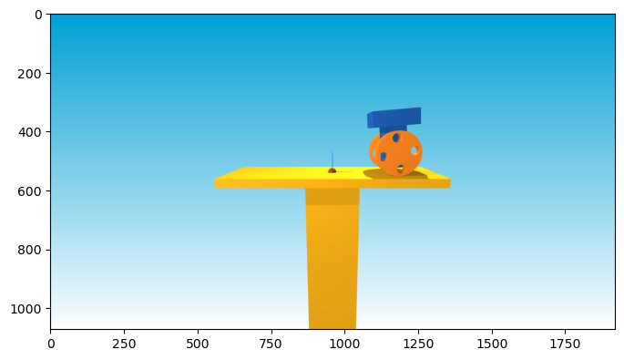
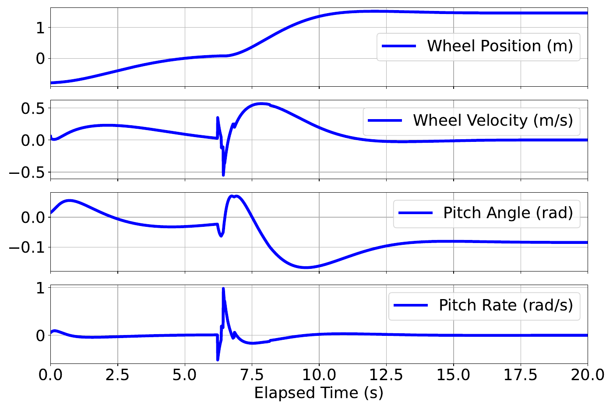

07 / Robot feedback control / Simulated controller
AE353 DP1 · Maxwell Lutter & Luke Phan
Balancing a wheeled robot through a cat-catching impact with state feedback
A wheeled robot had to balance upright, reach the catching location, and remain stable after a falling cat struck its basket. With Luke Phan, I developed a four-state feedback design and tested it in the supplied course simulator. A saved run caught and held the cat; the response plots also revealed residual position and pitch offsets after the impact, making the model’s limits part of the result.
- Team contribution
- Controller-design, simulation, and report work co-authored with Luke Phan
- Tools
- State feedback · Eigenvalue analysis · Torque limits · Python / SciPy
- Outcome
- One documented successful catch; post-impact equilibrium offsets identified

Choose feedback around the upright equilibrium
The model used body pitch, wheel position, and their rates, with wheel torque as the input. The team linearized around an upright, stationary robot and generated candidate feedback gains, screening them by the closed-loop eigenvalues.
A matrix-exponential state response checked how the selected gain recovered from a small perturbation. The controller then mapped the measured state to a torque command clipped to ±5 N·m, carrying the local feedback design into the nonlinear simulation.
Work around unreliable automatic screening
The notebook records different behavior when the simulator display was disabled, which undermined an intended automatic search across gains and repeated trials. Enabling the display made screening slow, so the team selected a demonstration gain through manual testing.
The final documented experiment ran for 20 seconds from randomized initial conditions, with the cat launched after a short random delay. Success meant catching and holding the cat for the rest of the run. This is a worked demonstration rather than a measured robustness percentage.
Read the impact response, not just the catch flag
The saved notebook reports a successful catch. The state histories show the initial recovery, a sharp response when the cat hits the basket, and subsequent settling. The robot did not return completely to the platform center or to a perfectly upright pitch.
The report proposes that the caught cat’s added mass changes the system dynamics, shifting the behavior away from the equilibrium used to design the gain. That explanation is a hypothesis consistent with the observed response, not a tested payload-adaptive controller.


What the work demonstrates
The project connects linearization, eigenvalue-based gain selection, torque-limited implementation, and interpretation of a nonlinear impact response. It also shows why a locally stable nominal model and a successful event do not establish robustness to changed dynamics.
Luke Phan and I share credit for the controller study. The linked notebook contains the modeling, gain search, implementation, saved catch result, and response analysis; course-provided physics and visualization remain credited separately.